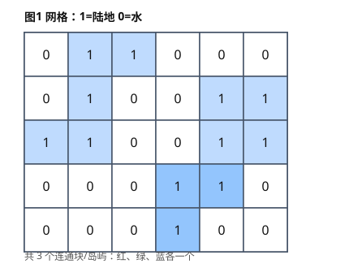

必备编程模板（GESP 七级真题实战）
本章把 GESP C++ 七级（2023-12 至 2026-06 历年真题）里反复出现的编程题，提炼成一套"背下来就能改"的核心模板。每一节都是一个可直接编译运行的 C++ 程序骨架，并标注它对应哪道真题。把这一章熟记、能手写，七级编程题（每场 2 道、共 50 分）基本就能稳过。
真题考点分布（按出现频率）：动态规划（LIS / LCS / 区间 DP / 背包）> 图搜索（DFS / BFS / Flood Fill）> 哈希与状态压缩（前缀状态 + map）> 树形 DP / 并查集 / 二分图 / 数学库函数。本章模板覆盖以上全部。
61.1 最长上升子序列 LIS（贪心 + 二分，）
对应真题：金币收集（2025-09，把运动模型转成 LIS / 最长不下降子序列）。
要点：tail[k] 记录"长度为 的上升子序列的最小末尾"。lower_bound 得到严格递增 LIS；若要"非递减"改用 upper_bound。
#include <iostream>
#include <vector>
#include <algorithm>
using namespace std;
// 返回最长严格上升子序列长度，时间 O(n log n)
int LIS(const vector<int>& a) {
vector<int> tail; // tail[k] = 长度为 k+1 的 LIS 的最小末尾
for (int x : a) {
auto it = lower_bound(tail.begin(), tail.end(), x);
if (it == tail.end()) tail.push_back(x); // 接在末尾，长度 +1
else *it = x; // 替换更优的末尾
}
return (int)tail.size();
}
int main() {
int n; cin >> n;
vector<int> a(n);
for (int i = 0; i < n; i++) cin >> a[i];
cout << LIS(a) << endl;
return 0;
}
若题目要求"最长不下降"，把
lower_bound换成upper_bound即可。
61.2 最长公共子序列 LCS（）
对应真题：单选题多次考查 LCS 定义与代码（如 2024-06 第 3、8 题）。
要点：dp[i][j] 表示 s1 前 个字符与 s2 前 个字符的 LCS 长度。空间可用滚动数组降到 （只留相邻两行）。
#include <iostream>
#include <vector>
#include <string>
#include <algorithm>
using namespace std;
int LCS(const string& s1, const string& s2) {
int n = s1.size(), m = s2.size();
vector<vector<int>> dp(n + 1, vector<int>(m + 1, 0));
for (int i = 1; i <= n; i++)
for (int j = 1; j <= m; j++)
if (s1[i - 1] == s2[j - 1])
dp[i][j] = dp[i - 1][j - 1] + 1; // 字符相同，两端都纳入
else
dp[i][j] = max(dp[i - 1][j], dp[i][j - 1]); // 取较大子问题
return dp[n][m];
}
int main() {
string s1, s2; cin >> s1 >> s2;
cout << LCS(s1, s2) << endl;
return 0;
}
61.3 区间动态规划（石子合并 / 戳气球同构）
对应真题：2026-06 编程题 2（与"戳气球"同构的区间 DP）、整数拆分（2026-03，区间/划分 DP）。
要点：区间 DP 一律按区间长度从小到大枚举：len 从 2 到 ，再枚举起点 i、终点 j=i+len-1，最后枚举分界点 k。
#include <iostream>
#include <vector>
#include <algorithm>
using namespace std;
const int INF = 1e9;
// 石子合并：合并相邻两堆的最小代价（代价=两堆之和）
int stoneMerge(const vector<int>& a) {
int n = a.size();
vector<int> s(n + 1, 0); // 前缀和
for (int i = 1; i <= n; i++) s[i] = s[i - 1] + a[i - 1];
vector<vector<int>> dp(n + 1, vector<int>(n + 1, 0));
for (int len = 2; len <= n; len++) { // 长度从小到大
for (int i = 1; i + len - 1 <= n; i++) {
int j = i + len - 1;
dp[i][j] = INF;
for (int k = i; k < j; k++) // 枚举最后合并的分界
dp[i][j] = min(dp[i][j],
dp[i][k] + dp[k + 1][j] + s[j] - s[i - 1]);
}
}
return dp[1][n];
}
int main() {
int n; cin >> n;
vector<int> a(n);
for (int i = 0; i < n; i++) cin >> a[i];
cout << stoneMerge(a) << endl;
return 0;
}
戳气球同构：转移改为
dp[l][r] = max(dp[l][r], dp[l][k] + dp[k][r] + a[l-1]*a[k]*a[r+1])（枚举最后被戳破的k，区间为开区间(l, r)）。
61.4 0/1 背包（一维优化）
对应真题：武器购买（2024-12，0/1 背包变形）、调味平衡（2025-06，差值背包）。
要点：一维数组 dp[j] 表示花费恰为 时的最大价值；容量必须逆序枚举，否则同一件物品会被重复使用。dp 初值 0 表示"恰好不选也可行"。
#include <iostream>
#include <vector>
#include <algorithm>
using namespace std;
// 0/1 背包：在总花费 <= cap 下求最大总价值
int knapsack(int n, int cap, const vector<int>& cost, const vector<int>& val) {
vector<int> dp(cap + 1, 0);
for (int i = 0; i < n; i++)
for (int j = cap; j >= cost[i]; j--) // 逆序！避免重复选
dp[j] = max(dp[j], dp[j - cost[i]] + val[i]);
return *max_element(dp.begin(), dp.end());
}
int main() {
int n, cap; cin >> n >> cap;
vector<int> cost(n), val(n);
for (int i = 0; i < n; i++) cin >> cost[i];
for (int i = 0; i < n; i++) cin >> val[i];
cout << knapsack(n, cap, cost, val) << endl;
return 0;
}
差值背包（酸度甜度相等）：令
diff = 酸 - 甜，目标diff==0时价值最大。差值可为负，用偏移量OFFSET：dp[OFFSET + d]表示当前差值d的最大(酸+甜)和，仍是一维 0/1。
61.5 DFS 树 / 图遍历 + 子树统计
对应真题：黑白翻转（2024-06，树上连通子树）、燃烧（2024-12，树形 DP 换根）、小杨寻宝（2024-09，树上关键点成链）。
要点：树的 DFS 用 dfs(u, fa) 传入父节点避免回边；返回"子树信息"（如子树内黑点数量 cnt[u]），父节点据此判断当前点是否处在所有关键点的连接路径上。
#include <iostream>
#include <vector>
using namespace std;
const int N = 1e5 + 5;
vector<int> g[N];
int col[N]; // col[u]=1 表示黑，0 表示白
int cnt[N]; // cnt[u] = 以 u 为根的子树中黑点数量
int totBlack, ans;
void dfs(int u, int fa) {
cnt[u] = (col[u] == 1);
int branches = 0; // 含黑点的"方向"数
for (int v : g[u]) {
if (v == fa) continue;
dfs(v, u);
cnt[u] += cnt[v];
if (cnt[v] > 0) branches++;
}
if (col[u] == 0) { // 白点：父方向是否含黑点？
if (totBlack - cnt[u] > 0) branches++;
if (branches >= 2) ans++; // 处在两个黑点路径上 → 必须翻转
}
}
int main() {
int n; cin >> n;
for (int i = 1; i <= n; i++) { cin >> col[i]; totBlack += col[i]; }
for (int i = 1; i < n; i++) {
int u, v; cin >> u >> v;
g[u].push_back(v); g[v].push_back(u);
}
if (totBlack <= 1) { cout << 0 << endl; return 0; }
dfs(1, 0);
cout << ans << endl;
return 0;
}
61.6 BFS 最短路 / 层级遍历
对应真题：商品交易（2023-12，有向图建模 + BFS 求最少交换次数）、城市规划（2025-12，每点一次 BFS 求图中心）。
要点：无权图最短路用 BFS，距离就是"经过的边数"。dist 数组初值 -1（未访问），从起点 dist[s]=0 入队，扩展到邻居 dist[v]=dist[u]+1。
#include <iostream>
#include <vector>
#include <queue>
using namespace std;
const int N = 1e5 + 5;
vector<int> g[N];
int dist[N];
// 求从 s 出发到各点的最少边数（无权图最短路）
void bfs(int s, int n) {
for (int i = 1; i <= n; i++) dist[i] = -1;
queue<int> q;
dist[s] = 0; q.push(s);
while (!q.empty()) {
int u = q.front(); q.pop();
for (int v : g[u])
if (dist[v] == -1) { // 首次访问即最短
dist[v] = dist[u] + 1;
q.push(v);
}
}
}
int main() {
int n, m, s; cin >> n >> m >> s;
for (int i = 0; i < m; i++) {
int u, v; cin >> u >> v;
g[u].push_back(v); // 有向图只加一条；无向图则双向
}
bfs(s, n);
for (int i = 1; i <= n; i++) cout << dist[i] << " \n"[i == n];
return 0;
}
城市规划：对每个点都跑一次上面的
bfs，取"该点到其余点距离的最大值"作为该点"难度"，最后选难度最小且编号最小的点。
61.7 Flood Fill 连通块 / 岛屿计数
对应真题：俄罗斯方块（2024-03，同色连通块形状归一化）、连通图（2025-09，并查集或 Flood Fill 统计连通块）。
要点：从左上到右下扫描，每遇到一个未访问的目标格就启动一次 DFS/BFS，把整块连通区域标记为已访问，连通块数 +1。本质是"图遍历在二维网格上的应用"（详见第 59 章）。

#include <iostream>
#include <vector>
using namespace std;
int n, m;
vector<string> grid;
vector<vector<bool>> vis;
int dx[4] = {0, 0, 1, -1}; // 四邻域：右 左 下 上
int dy[4] = {1, -1, 0, 0};
void dfs(int x, int y) {
vis[x][y] = true;
for (int d = 0; d < 4; d++) {
int nx = x + dx[d], ny = y + dy[d];
if (nx >= 0 && nx < n && ny >= 0 && ny < m
&& !vis[nx][ny] && grid[nx][ny] == '1')
dfs(nx, ny);
}
}
int main() {
cin >> n >> m;
grid.resize(n); vis.assign(n, vector<bool>(m, false));
for (int i = 0; i < n; i++) cin >> grid[i];
int blocks = 0;
for (int i = 0; i < n; i++)
for (int j = 0; j < m; j++)
if (!vis[i][j] && grid[i][j] == '1') { // 找到一个新连通块
blocks++;
dfs(i, j);
}
cout << blocks << endl;
return 0;
}
61.8 并查集（连通块统计）
对应真题：连通图（2025-09，最少加边数 = 连通块数 − 1）。
要点：find 带路径压缩，merge 把两个根连起来。统计"根的个数"即为连通块数；使整图连通最少需要加 连通块数 − 1 条边。
![并查集合并示意]()
#include <iostream>
#include <vector>
using namespace std;
const int N = 1e5 + 5;
int fa[N];
int find(int x) { // 路径压缩查找根
return fa[x] == x ? x : fa[x] = find(fa[x]);
}
void merge(int x, int y) {
fa[find(x)] = find(y); // 把 x 的根挂到 y 的根下
}
int main() {
int n, m; cin >> n >> m;
for (int i = 1; i <= n; i++) fa[i] = i; // 初始化：各自成集合
for (int i = 0; i < m; i++) {
int u, v; cin >> u >> v;
merge(u, v);
}
int comps = 0;
for (int i = 1; i <= n; i++)
if (fa[i] == i) comps++; // 统计根的个数
cout << "连通块数=" << comps
<< " 最少加边数=" << comps - 1 << endl;
return 0;
}
61.9 前缀状态 + 哈希统计（map）
对应真题：区间乘积（2024-06，质因子奇偶状态异或）、等价消除（2025-03，字符出现奇偶状态）。
要点：把"复杂对象"编码成一个整数状态，扫描时维护前缀状态，两个相同前缀状态之间的区间即满足条件。用 map/unordered_map 统计某状态出现次数，配合组合数累加答案。
#include <iostream>
#include <string>
#include <map>
using namespace std;
// 等价消除：子串能否完全消除 ⇔ 区间内每个字符出现次数为偶数
// 用位掩码 mask 的第 (c-'a') 位表示字符 c 出现次数的奇偶
int main() {
string s; cin >> s;
int mask = 0;
map<int, long long> mp;
mp[0] = 1; // 空前缀视为状态 0
long long ans = 0;
for (char c : s) {
mask ^= (1 << (c - 'a'));
ans += mp[mask]; // 之前出现过相同 mask，中间的子串即合法
mp[mask]++;
}
cout << ans << endl; // 合法子串（可完全消除）的数量
return 0;
}
区间乘积 是同一思想的升级版：把每个数 （）质因子（ 共 10 个）指数的奇偶性编成一个 10 位二进制，前缀异或代替求和，
map统计相同异或值即可。
61.10 二分图染色
对应真题：交流问题（2025-12，判定图是否为二分图 / 相邻点颜色不同）。
要点：用 color[u] 记录颜色（0 未染 / 1 / 2）。DFS 给当前点染 c，邻居必须染 3-c；若邻居已染同色则不是二分图。
#include <iostream>
#include <vector>
using namespace std;
const int N = 1e5 + 5;
vector<int> g[N];
int color[N];
bool ok = true;
bool dfs(int u, int c) {
color[u] = c;
for (int v : g[u]) {
if (color[v] == c) return false; // 邻居同色 → 冲突
if (color[v] == 0 && !dfs(v, 3 - c)) return false;
}
return true;
}
int main() {
int n, m; cin >> n >> m;
for (int i = 0; i < m; i++) {
int u, v; cin >> u >> v;
g[u].push_back(v); g[v].push_back(u);
}
for (int i = 1; i <= n; i++)
if (color[i] == 0 && !dfs(i, 1)) { ok = false; break; }
cout << (ok ? "Yes" : "No") << endl;
return 0;
}
61.11 数学库函数（三角 / 对数 / 指数）
对应真题：单选题常考（sin(π/2)=1、log() 默认自然对数、log10/log2 底数、exp(x)=e^x、弧度制）。
要点：<cmath> 里三角函数参数是弧度（）；log() 是自然对数 ，不是 ；exp(x) 即 。
#include <iostream>
#include <cmath>
using namespace std;
int main() {
double x; cin >> x;
cout << "sin=" << sin(x) << "\n"; // 参数需为弧度
cout << "cos=" << cos(x) << "\n";
cout << "ln=" << log(x) << "\n"; // 自然对数 e 为底
cout << "log10="<< log10(x) << "\n"; // 以 10 为底
cout << "log2=" << log2(x) << "\n"; // 以 2 为底
cout << "exp=" << exp(x) << "\n"; // e^x
return 0;
}
61.12 速查表（背这一张就够了）
| 模板 | 适用真题 | 核心复杂度 | 关键易错点 |
|---|---|---|---|
| LIS 贪心+二分 | 金币收集 | lower_bound 严格增 / upper_bound 非减 | |
| LCS | 单选常考 | 相等才 +1；可滚动数组降空间 | |
| 区间 DP | 戳气球 / 拆分 | 按区间长度从小到大枚举 | |
| 0/1 背包 | 武器购买 / 调味平衡 | 容量逆序枚举 | |
| DFS 子树统计 | 黑白翻转 / 燃烧 | 传 fa 防回边；返回子树信息 | |
| BFS 最短路 | 商品交易 / 城市规划 | dist 初值 −1；队列 FIFO | |
| Flood Fill | 俄罗斯方块 / 连通图 | 四邻域越界判断 | |
| 并查集 | 连通图 | 近乎 | 路径压缩；根数=连通块数 |
| 前缀状态+map | 区间乘积 / 等价消除 | 空前缀 mp[0]=1；异或/掩码 | |
| 二分图染色 | 交流问题 | 邻居必须 3-c；同色即冲突 | |
| 数学库函数 | 单选常考 | 弧度制；log 是自然对数 |
通关 checklist：11 个模板都能在白纸上默写 → 每类各刷 2–3 道洛谷对应题（如 P1020 导弹拦截、P1216 数字三角形、P1605 迷宫、P1162 填涂颜色、P3370 字符串哈希）→ 近 3 场真题编程题各做一遍。完成即可"背完必过"。
61.13 选择题练习（含参考答案）
参考答案与解析（点击展开）
- B —— LIS 贪心+二分时间复杂度为 ；
lower_bound得到严格递增。 - B —— 0/1 背包一维优化的容量循环必须逆序，否则同一物品被重复选取。
- A —— 区间 DP 的标准顺序是按区间长度从小到大枚举。
- B —— BFS 用队列（FIFO）实现"先发现先扩展"，距离即最少边数。
- B —— Flood Fill 用
vis标记已访问避免重复；连通块数 = 启动 DFS/BFS 的次数。 - C —— 并查集路径压缩后，统计"根的个数"即为连通块数，最少加边数 = 连通块数 − 1。
- A ——
log()在<cmath>中默认是自然对数（以 为底），不是 。 - B —— 两个相同前缀状态之间的子串满足条件，用
map统计出现次数即可累加答案。
-
最长上升子序列（LIS）的"贪心 + 二分"模板，时间复杂度为？（ ）
- A.
- B.
- C.
- D.
-
0/1 背包一维优化中，容量循环必须怎样枚举？（ ）
- A. 顺序（从小到大）
- B. 逆序（从大到小）
- C. 随意
- D. 只枚举一半
-
区间动态规划枚举区间的标准顺序是？（ ）
- A. 按起点从小到大
- B. 按区间长度从小到大
- C. 随机枚举
- D. 按终点从大到小
-
无权图求最短路（最少边数），应当使用什么数据结构存放待扩展结点？（ ）
- A. 栈
- B. 队列
- C. 优先队列
- D. 哈希表
-
Flood Fill 统计网格连通块时，避免重复访问需要？（ ）
- A. 增大网格
- B. 用
vis标记已访问 - C. 用
map - D. 用栈代替队列
-
并查集统计无向图连通块数时，最少需要加几条边使整图连通？（ ）
- A. 0
- B. 1
- C. 连通块数 − 1
- D. 顶点数 − 1
-
在 C++
<cmath>中，log(128)的返回值约等于多少（数学意义）？（ ）- A. 以 为底的对数（自然对数）
- B.
- C.
- D. 128 的平方根
-
"前缀状态 +
map"技巧（如区间乘积、等价消除）的核心思想是？（ ）- A. 把对象编码成状态，统计相同前缀状态之间的合法区间
- B. 直接排序后去重
- C. 用 BFS 遍历
- D. 用并查集合并